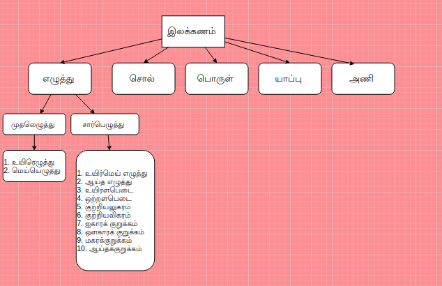

தமிழ் இலக்கணம்
தமிழ் இலக்கணம் ஐந்து வகைபடும்:
- எழுத்து
- சொல்
- பொருள்
- யாப்பு
- அணி 
1. எழுத்து இலக்கணம்
எழுத்து இலக்கணம் இரண்டு வகைபடும்:
- முதலெழுத்துகள்
- சார்பெழுத்துகள்
| முதலெழுத்துகள் | சார்பெழுத்துகள் |
|---|---|
| 1. உயிரெழுத்துகள் | 1. உயிர்மெய் எழுத்து |
| 2. மெய்யெழுத்துகள் | 2. ஆய்த எழுத்து |
| 3. உயிரளபெடை | |
| 4. ஒற்றளபெடை | |
| 5. குற்றியலுகரம் | |
| 6. குற்றியலிகரம் | |
| 7. ஐகாரக் குறுக்கம் | |
| 8. ஔகாரக் குறுக்கம் | |
| 9. மகரக்குறுக்கம் | |
| 10. ஆய்தக்குறுக்கம் |
முதலெழுத்துகள்:
அ முதல் ஔ வரையுள்ள 12 உயிரெழுத்துகளும், 'க்' முதல் 'ன்' வரையுள்ள 18 மெய்யெழுத்துகளும் ஆகிய முப்பதும் முதலெழுத்துகள் எனப்படும்.
உயிரெழுத்துகள்
உயிரெழுத்துகள் 12 - அ, ஆ, இ, ஈ, உ, ஊ, எ, ஏ, ஐ, ஒ, ஓ, ஔ.
உயிரெழுத்துகள் இரண்டு வகைபடும்.
- உயிர் எழுத்துகளில் குறுகி ஒலிக்கும் எழுத்துக்களை குறில் எழுத்துக்கள் என்பர். "அ, இ, உ, எ, ஒ" ஆகிய ஐந்து எழுத்துக்களும் குறைந்த அளவு நேரமே ஒலிப்பதால் இவற்றைக் குறில் எழுத்துகள் அல்லது குற்றெழுத்து எனப்படும்.
- உயிர் எழுத்துகளில் நீண்டு ஒலிக்கும் எழுத்துக்களை நெடில் எழுத்துக்கள் என்பர். "ஆ, ஈ, ஊ, ஏ, ஐ, ஓ, ஒள" ஆகிய ஏழு எழுத்துக்களும் நீண்டு ஒலிப்பதால் இவற்றைக் நெடில் எழுத்துகள் அல்லது நெட்டெழுத்து எனப்படும்.
மெய்யெழுத்துகள்
மெய்யெழுத்துகள் 18 - க், ங், ச், ஞ், ட், ண், த், ந், ப், ம், ய், ர், ல், வ், ழ், ள், ற், ன்.
மெய் எழுத்து தனித்து இயங்காதவை ஆகும். இந்த 18 எழுத்துக்களும் உயிர் எழுத்துக்களுடன் சேர்ந்தே இயங்கும்.
- க் - அக்கா
- ங் - உள்ளங்கை
- ச் - பச்சை
- ஞ் - பஞ்சு
- ட் - பட்டு
மெய்யெழுத்துகள் மூன்று வகைபடும்.
- வல்லினம் = வல் + இனம். வன்மையாக ஒலிக்கும் எழுத்துக்களை வல்லெழுத்துக்கள் அல்லது வல்லினம் என்றழைப்பர். க், ச், ட், த், ப், ற் ஆகிய ஆறும் வலிய ஓசை இருப்பதால் இவை வல்லின எழுத்துக்கள் ஆகும்.
- க் - தங்கக் குடிசை
- ச் - வேர்ச் சொல்
- ப் - ஊக்கப் பரிசு
- மெல்லினம் = மெல் + இனம். மென்மையாக ஒலிக்கும் எழுத்துகளை மெல்லெழுத்துக்கள் அல்லது மெல்லினம் என்றழைப்பர். ங், ஞ், ண், ந், ம், ன் ஆகிய ஆறும் மெலிய ஓசை இருப்பதால் மெல்லின எழுத்துகள் ஆகும்.
- ங் - சங்கு
- ஞ் - பஞ்சு
- ண் - பண்டம்
- ந் - பந்து
- இடையினம் = இடை + இனம். வன்மைக்கும் மென்மைக்கும் இடையில் ஒலிக்கும் எழுத்துகளை இடையெழுத்துக்கள் அல்லது இடையினம் என்றழைப்பர். ய், ர், ல், வ், ழ், ள் ஆகிய ஆறும் வன்மைக்கும் மென்மைக்கும் இடையில் ஒலிப்பதால் இடையின எழுத்துகள் ஆகும்.